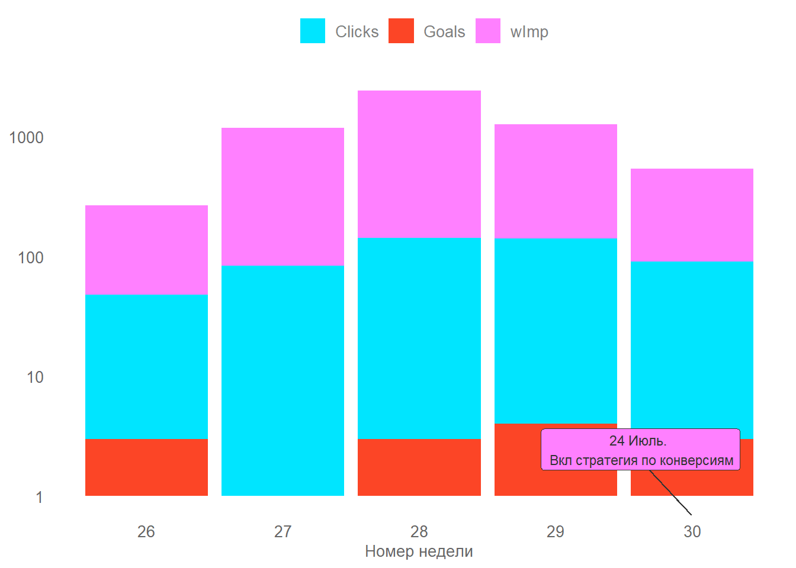
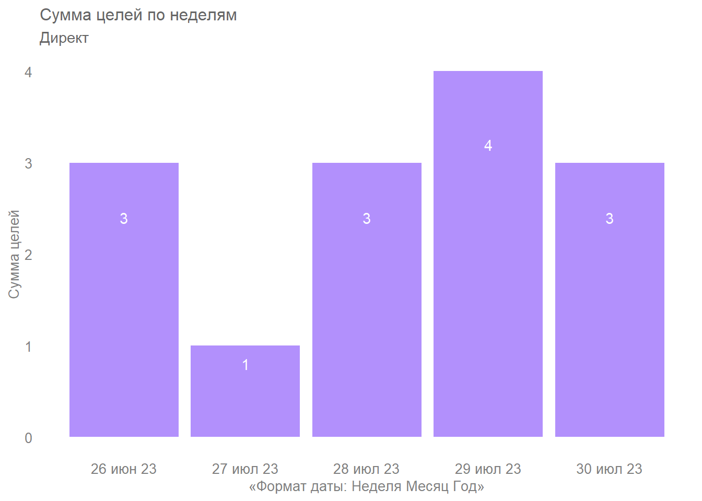

| Cost | Impressions | WeightedImpressions | Clicks | Sessions | Bounces | Goals_F | Goals_A |
|---|---|---|---|---|---|---|---|
| 17201.05 | 3879 | 2717.22 | 207 | 508 | 156 | 4 | 6 |
МастерСлух
Обзор рекламных кампаний
Таблица: Метрики по всему аккаунту
Таблица: Метрики в разрезе рекламных кампаний
| CampaignName | Cost | Impressions | WeightedImpressions | Clicks | Sessions | Bounces | Goals_F | Goals_A |
|---|---|---|---|---|---|---|---|---|
| [поиск] Слуховые аппараты. Вендоры. ТГ | 4822.69 | 370 | 353.55 | 61 | 160 | 47 | 2 | 2 |
| [поиск] Фид. ДО | 4803.17 | 620 | 618.40 | 53 | 109 | 23 | 0 | 0 |
| [поиск] Бренд. ТГ | 3668.51 | 259 | 229.46 | 45 | 114 | 37 | 2 | 4 |
| [галерея] Фид. ДО | 2744.93 | 2515 | 1404.83 | 32 | 86 | 33 | 0 | 0 |
| [поиск] Батарейки. ТГ | 899.27 | 76 | 73.00 | 12 | 30 | 12 | 0 | 0 |
| [поиск] Слуховые аппараты. ТГ | 262.48 | 39 | 37.98 | 4 | 9 | 4 | 0 | 0 |
Отчет по целям
Таблица: Сводка по аккаунту
| 06-23 | 07-23 | |
|---|---|---|
| Рабочих дней РК | 4.00 | 13.00 |
| Итого расход, руб | 2056.00 | 15147.00 |
| Итого переходов | 32.00 | 175.00 |
| Средняя цена перехода, руб | 64.25 | 86.55 |
| Итого обращений | 3.00 | 3.00 |
| Цена обращения, руб | 685.33 | 5049.00 |
| Обращений в день | 0.75 | 0.23 |
| Конверсия, % | 9.38 | 1.71 |
| Звонки | 2.00 | 1.00 |
| Forms | 0.00 | 1.00 |
| B24 | 0.00 | 1.00 |
| EMails | 1.00 | 0.00 |
График: Сумма целей по дням

График: Сравнение периодов
Данные указаны в формате «неделя месяц год».
